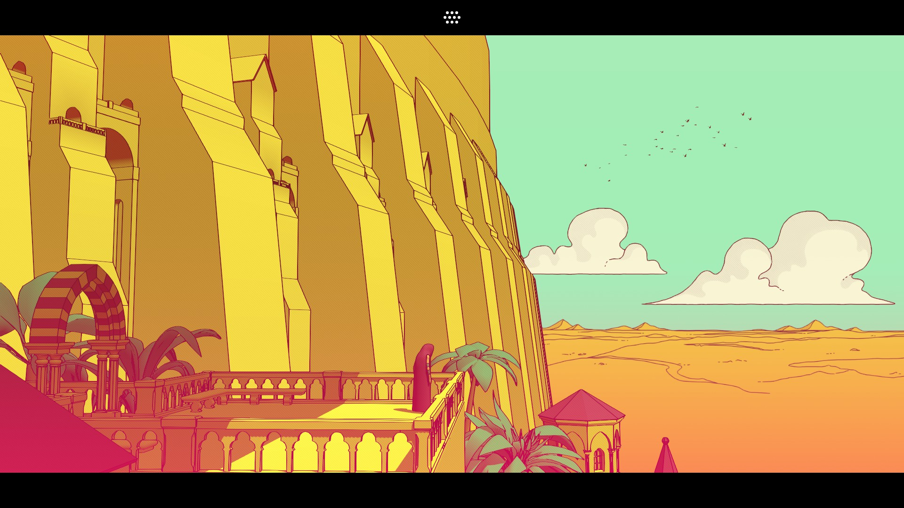

I Diari di Babele: 30 Giorni ad Hong Kong
Non so ancora molto di questo posto. Mi trovo qui quasi per caso, senza alcun scopo apparente e soprattutto senza capire minimamente cosa dicono le persone che ho intorno.
Provo ad annusare l'aria. "Umida, si sente lo smog, sento lo stesso odore di cui spesso molti cibi sanno. Terroso."
Odore di cucina differente ad ogni angolo della strada: da qualcosa di caldo e accogliente si passa al forte odore di olio di frittura, finché tutto cambia quando una nota di peperoncino mi passa per il naso.
"Etciù", convinto di aver fatto una figuraccia mi guardo intorno.
Apro dolcemente gli occhi: tutto è troppo grigio, ma ci sono luci di mille colori diversi pronte a spezzare quella sensazione.
Intorno a me una marea di persone. In cerca di una smentita provo a guardarle, ma sono così interessanti che d’un tratto mi ritrovo sommerso da stimoli.
Espressioni, capelli, occhi, stile nel vestirsi. Più continuo a guardare più noto dettagli a me nuovi. Ma ognuno va per la sua strada noncurante della mia figuraccia. Sono salvo.
Una suonata di clacson mi martella le orecchie. Devo sbrigarmi, devo attraversare, ma non avevo guardato dal lato giusto della strada.
La scritta "望右" che non capisco, quasi gommata, ha sopra "Look Right" e la freccia -> era chiara. Ma la mia abitudine mi ha fatto guardare dall'altra parte ed ecco che ci lascio le penne.
Ho preso il mio appunto sul mio taccuino mentale: "Prima di attraversare guardare SEMPRE il pavimento"
Ormai sono passati dei giorni, inizio a capire come spostarmi da una zona all'altra e a capire come ordinare al ristorante e come pagare.
Entro per la prima volta in un ristorante, chiedo un tavolo mostrando una certa sicurezza. Mi rispondono dinuovo nella loro lingua.
Segue un lungo attimo di pausa e un lungo sguardo analizzatore: la cassiera ha inziato a ripetere più volte qualcosa che non riesco a capire.
Di colpo ripete le parole e tira fuori delle banconote dalla cassa.
L'illuminazione: "Only Cash".
Stava cercando di dirmi che potevo pagare solo con contanti. Accetto questo tacito accordo con un pollice alzato e mi siedo al tavolo.
Questa volta, ho iniziato a disegnare sul mio taccuino: !"Banconote sventolate +/o Only Cash -> accettiamo solo contanti"
Successivamente, scoprirò da degli abitanti del posto che "only cash" è sinonimo di un buon ristorante.
In uno dei giorni più bui, il senso di solitudine e la mancanza di contatto mi stavano mangiando vivo.
Ho aperto la mappa e ho cercato il primo parco di grandi dimensioni che avessi "sbloccato" nella mia area. Prendo il taccuino, appunto qualche nota sul parco, la strada e il tempo di percorrenza e parto in cerca di un posto dove poter stare in silenzio e in mezzo al verde.
Durante il viaggio di 40 minuti in metro penso che nel mio piccolo paesino sarei potuto uscire, camminare 10 minuti e trovarmi in un bosco.
Arrivato al parco, mi trovo in uno dei polmoni verdi più grandi di Hong Kong. Il fragore della cascata, il lago con le carpe koi e il verde trasmettono la loro tranquillità della natura.
Anche se alzando un po' lo sguardo si continuano a vedere questi grigi palazzoni, questo piccolo ritaglio di terreno ricarica la barra della salute del bucolico umbro in me.
Sabato: seduto in questo boschetto pieno di scimmie, a cui è sconsigliato guardare negli occhi, fisso il mio taccuino e e prime pagine sono piene di appunti logistici.
Come muovermi per la città senza morire e senza distruggermi le suole delle scarpe, come distinguere un buon ristorante e come ricaricare la mia barra della vita.
Ma iniziano a intravedersi dei glifi che non riesco ancora a decifrare bene.
Il cemento non è più solo cemento, ci ho visto dentro sprazzi di umanità. Non sono ingranaggi di una macchina perfettamente oleata ed efficente ma motori pronti ad adoperarsi per il prossimo quando c'è un problema.
L'ho sentito in un ristoratore sorpreso dal mio piatto pulito e in un invito inaspettato verso Shenzhen.
Questo mi fa capire che il gioco non è ancora finito. Sono ancora al primo piano della torre di Babele ma il suono di Hong Kong sta cambiando.
Non è più il suo freddo "ding ding ding" dei semafori e il suono delle ventole dei condizionatori ma inizio a sentire suoni che sono quasi parole, pronte per essere decifrate.
Prendo un respiro, chiudo il taccuino e lo ripongo assieme al pupazzo di Sudowoodo e proseguo la passeggiata in questo surreale boschetto.
Andrà meglio il prossimo piano.
Per chi volesse seguire le mie avventure da vicino, trova questo canale telegram a cui accedere.
Se vi salvate il link potete vedere anche senza avere telegram.